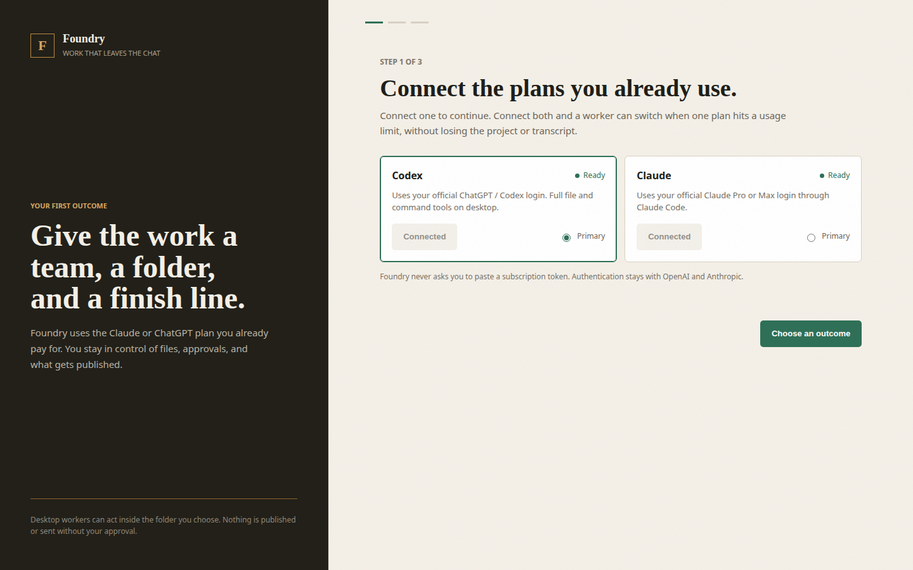

Context, evidence, and decisions drift into separate threads. You become the integration layer.
Foundry gives the work a small AI team, one shared folder, and a finish line. It organizes the brief, checks the evidence, and keeps every deliverable together while you make the decisions.
The expensive part is briefing the same work again, checking every claim, finding the latest version, and turning scattered chat into something a client can actually review.
Context, evidence, and decisions drift into separate threads. You become the integration layer.
A bigger AI team is not useful when nobody owns the final file or the definition of done.
A plan limit or missing permission should pause cleanly, not erase progress or repeat work.
Use the official Claude Code or Codex login. Foundry does not ask you to paste a subscription token.
Start with a campaign review, landing page handoff, store audit, content sprint, or weekly operating review.
A maker and reviewer work in the same folder. You open the agreed file, request a focused revision, or accept it.

Foundry does not promise autonomous ad buying or guaranteed performance. It packages the work and the review process; you approve the result.
Provider usage is subject to the limits and terms of your own ChatGPT or Claude plan.
Keep one real workflow running locally.
For operators delivering client work every week.
Proposed for small teams after the pilot proves the workflow.
No. Foundry organizes work across the official Claude Code and Codex tools. You authenticate and pay those providers directly.
No. The web planner helps structure a mission and exports a mission file. Local file and command tools exist only in the installed desktop app.
Your project and local files remain. When another compatible provider is connected, Foundry can prepare a continuation with the saved objective, current files, and recent decisions. You approve the provider switch.
Not in the launch workflow. External and irreversible actions require explicit approval and are outside the first campaign-pack mission.